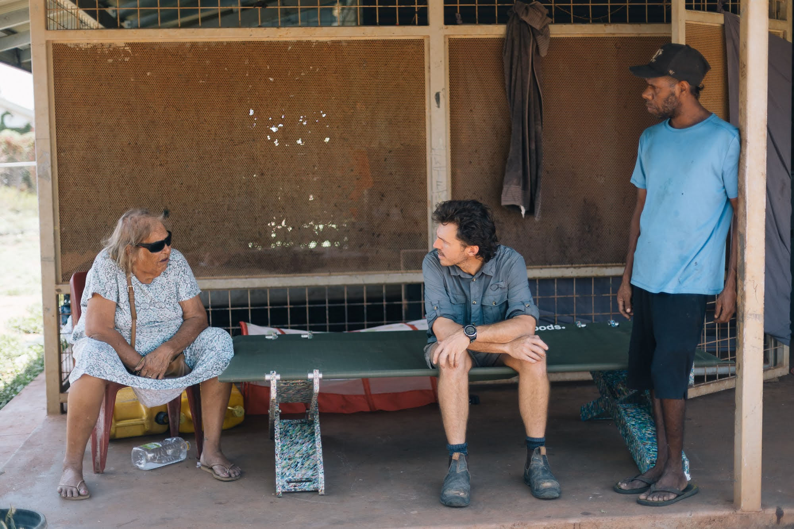
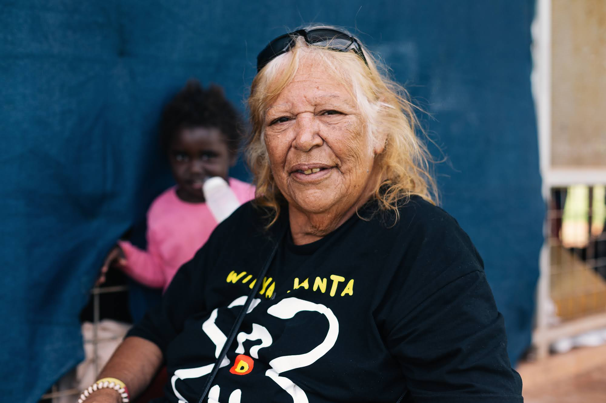

Goods Final Deck · design system, not the deck yet
One belief per slide.
Each beat does exactly one job: it's carried by a real face or a real number,
and three beats leave a quiet door back to the proof on the live site. Photo-forward,
sparse, warm. These are the building blocks. Once they feel right, we assemble the twelve beats
in Goods_Final_Deck.pen.
Documentary / editorial direction · content spine locked (every quote cleared, every figure register-verified) · 2026-07-21
Palette
cream
ink
terracotta
sage
muted
Type
Georgia, the display voice
System sans for body, captions and data
Uppercase tracked labels
APhoto + quote hero
The workhorse. A full-bleed On-Country photo, one cleared verbatim quote in Georgia, a portrait
chip where the storyteller has a cleared image, and a claim tag. The door line sits bottom-left.

2 · Never asked · Observed
“We’ve never been asked what sort of house we’d like to live in.”

Linda Turner · Tennant Creek
02
Used on beats 1 · 2 · 6 · 7 · 10 · 12
BModel diagram
Fine single-weight terracotta line-art to explain how the model works, in the Goods illustration voice.
Here: the plastic journey. Same treatment carries the X-trestle tension and the ownership pathway.
5 · The loop works · Delivered
Waste plastic in, a bed out, on Country.
20kg diverted per bed3,540kg kept out of landfill so far
05
Used on beats 3 (X-trestle) · 5 (plastic journey) · 9 (ownership pathway)
CSimple cost figure
The whole money story in one glance, no chart wall. Same $750 sale price both ways; the sage block is
what stays on Country per bed. Making it here keeps roughly five times more.
8 · The hinge · The truck test
Every bed sells for $750. The way we make it decides how much stays.
Buy the leg kit · todayMeasured
$685 leaves$65stays on Country
Press our own legs · the planModelled
$426 leaves$324stays on Country
Beds pressed in-house so far: 0. That honesty is the pitch.
Break-even is about 338 beds a year, once we make them here.
Break-even ~338 / yr · Modelled
the full cost model→goodsoncountry.com/investors
08
Used on beat 8
DData-viz stat panel
The proof numbers as designed viz, not just big numerals. The 540 splits into what was actually
delivered; the rest are clean counters. Register-verified, so it carries a Delivered tag.
4 · Proof at delivery · Delivered · register-verified
This is not a pitch about what could happen. It already has.
540
beds delivered into community
177 Stretch Bed363 Basket Bed
20
Washing machines in community
11
Communities served
3,540kg
Recycled HDPE diverted (Stretch beds)
“Our bed is right. That’s good. Good.”
Margaret Lloyd · Utopia homelands
walk the map→goodsoncountry.com/atlas
04
Used on beats 4 · 11
EThe door back to proof
Only three beats carry a door, so each one lands: the proof beat, the money beat, and the close.
One quiet line, bottom-left, a short verb and a real page. No QR, no clutter.
walk the map→goodsoncountry.com/atlas
the full cost model→goodsoncountry.com/investors
hear the voices→goodsoncountry.com/voices
On beats 4 · 8 · 12 only
▧How the twelve beats use the components
The spine is fixed (from the playout plan). This is just which component carries each beat.
Beat
Component
The one job
1 · The problem
A photo + quote
Freight breaks the old way. Alfred.
2 · Never asked
A photo + quote
Sixty years of not asking. Linda.
3 · Designed in community
A + B diagram
Talk to elders + how the X-trestle stands. Dianne.